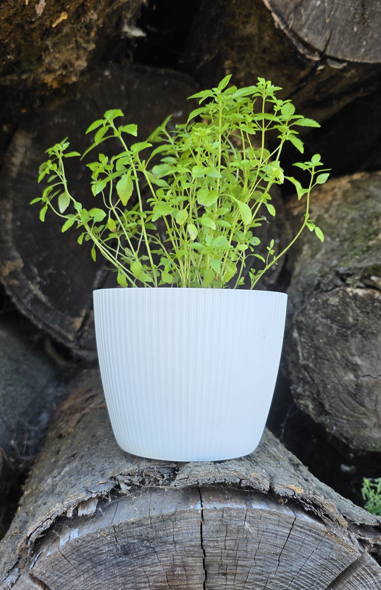

Bazalka pravá Compact
Listy jsou drobnější než u běžné bazalky, přirozeně vytváří kompaktní nižší keříkovitý tvar i bez zaštipování, má výrazně kořeněnou vůni a je vhodná i jako okrasná hrnková rostlina díky hustému olistění.
Použití
Čerstvé listy se používají:
• do salátů,
• k rajčatům a mozzarelle,
• do pesta,
• k těstovinám,
• do omáček,
• k rybám a mletému masu,
• do aromatických olejů a octů
• bylinkový čaj (několik čerstvých nebo sušených lístků přelít horkou vodou a louhovat 5–10 minut)
Léčivé účinky
• Podpora trávení – čaj z bazalky může pomoci zmírnit nadýmání, žaludeční křeče, pocit plnosti a podpořit chuť k jídlu.
• Protizánětlivé působení – obsahuje silice (zejména eugenol a linalool), které vykazují protizánětlivé účinky.
• Antioxidační účinky – je bohatá na flavonoidy a další antioxidanty, které pomáhají chránit buňky před oxidačním stresem.
• Mírné antibakteriální a antiseptické působení
• Zklidňující účinek – vůně bazalky může přispět ke snížení stresu a napětí a podpořit relaxaci.
Upozornění
• V běžném množství používaném v kuchyni je bazalka považována za bezpečnou.
• Vysoké dávky doplňků nebo koncentrovaného bazalkového oleje se nedoporučují v těhotenství ani při kojení bez konzultace s lékařem.
Bazalku je vhodné ji vnímat spíše jako zdravou součást jídelníčku než jako léčivý prostředek nahrazující standardní léčbu.
Cena 35 Kč • Odběr dle dohody Jaroměř a okolí